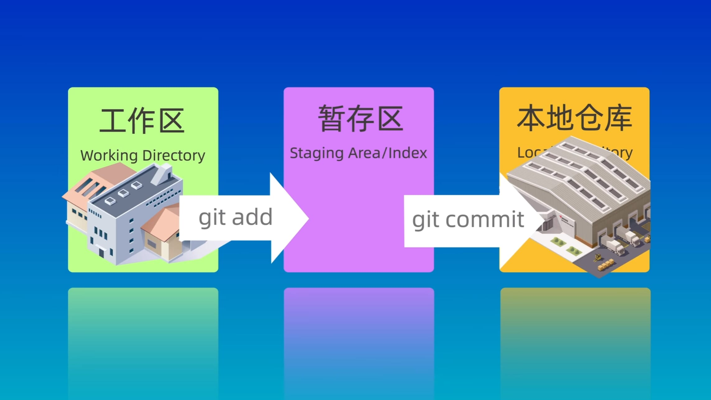
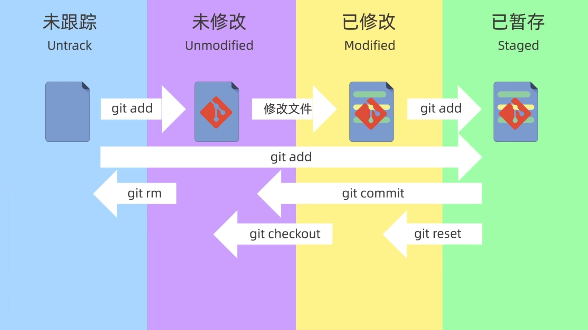

Git 版本控制
简介
Git是一个开源的分布式版本控制系统，可以有效、高速地处理从很小到非常大的项目版本管理。
也是Linus Torvalds为了帮助管理Linux内核开发而开发的一个开放源码的版本控制软件。
何为分布式？
简单来说，每个开发者都有一个独立的仓库，可以在本地进行提交、分支等操作，在没有网络和服务器的时候也可以正常工作。
用途
- 保存历史记录：
- 查看之前的版本
- 查看是谁做了改动
-
多人协作
每个人独立制作后进行合并 -
备份
主分支的内容保存在每个人的仓库中，不易丢失 -
试验新功能
通过分支来尝试新想法，而不会影响主分支的内容 -
解决冲突
如果两个人同时修改了同一部分内容，Git会提示冲突，并自己决定采用哪个版本 -
易于分享
可以通过Github等网站进行分享
常用命令¶
配置Git¶
用户名¶
邮箱¶
查看配置文件¶
创建仓库¶
新建¶
进入到目录后
会出现一个
.git文件夹，用于存储仓库信息
克隆¶
<url>处填写远程仓库地址，如：https://github.com/JunieXD/juniexd.github.io.git
添加到仓库¶
添加到暂存区¶
filename是文件名，可以使用通配符。
提示
使用 git add . 可以把当前目录的所有文件添加到暂存区。
空目录不会被纳入版本控制
查看状态¶
查看仓库文件¶
<args>缺省列出所有已跟踪的文件，包括已修改但尚未暂存的文件。
-c只列出已经通过git add添加到暂存区的文件。
-o只列出未跟踪的文件。
-u只列出有合并冲突的文件。
提交到仓库¶
message是提交的信息
注意
如果不使用 -m 参数，会进入输入提交信息的页面（默认打开vim编辑器）
可以使用 -a 参数，一次性完成 add 和 commit 操作
查看提交记录¶
提示
git log --oneline 查看简洁的提交记录
回退仓库¶
<args>参数可以使用--soft--hard--mixed默认参数是--mixed
<version>参数指定要回退到的版本号（使用git log查看）
提示
<version> 可以使用 HEAD^ 回退到上一个版本
| 参数 | 工作区 | 暂存区 |
|---|---|---|
| --soft | √ | √ |
| --hard | × | × |
| --mixed | √ | × |
查看操作的历史记录¶
可以找到某次误操作之前的版本号进行回退
查看文件差异¶
工作区和暂存区¶
查看工作区和暂存区之间所有的文件差异
查看一个或多个文件在工作区和暂存区之间的差异
工作区和版本库¶
查看工作区与具体某个提交版本之间的所有的文件差异
提示
git diff HEAD 查看工作区与最新版本库之间的所有的文件差异
git diff <version> -- <filename1> <filename2> ... 查看工作区与最具体某个版本之间的 指定文件名的多个文件差异
暂存区和版本库¶
查看暂存区和指定版本之间的所有文件差异
<version>缺省则是最新版本（HEAD）
查看暂存区和指定版本之间的指定文件差异
不同版本之间¶
查看两个版本之间的差异
查看两个版本之间的指定文件之间的差异
查看两个版本之间的改动的文件列表
查看两个版本之间的文件夹 src 的差异
删除暂存区中的文件¶
会同时删除暂存区和工作区的文件，用以简化操作（先删工作区再
git add到暂存区）。
提示
如果只想删除暂存区而不删除工作区的文件，需要带参数 --cached
GitHub 基本操作¶
推送到远程仓库
从远程仓库拉取（自动合并）
将添加一个远程仓库
<shortname>一般用origin
查看当前仓库所对应的远程仓库的别名和地址
指定分支的名称为
main
将本地的
BRANCH-NAME分支推送到远程REMOTE-NAME中的BRANCH-NAME分支通常使用
git push origin main
分支操作¶
查看仓库的所有分支以及当前所在分支
创建一个新的分支
使用-d参数删除已经被合并的分支
使用-D参数强制删除分支
切换到分支
将
name合并到当前分支（合并后name分支仍然存在）
遇到冲突解决方法¶
方法一 Merge¶
查看冲突文件列表
查看冲突的具体内容
接着需要手动修改冲突文件，修改完成后 add commit 即可
如果要中止此次合并过程，使用
方法二 Rebase¶
将当前的分支变基到
<name>分支（找到最近公共祖先，然后移植到最新版本，成为一条线）
两种方法的对比¶
Merge：不会破坏原分支的提交历史，方便回溯。但是会产生额外的提交节点。
Rebase：不会产生额外的提交节点。但是原分支的历史被改变了。
公共的分支上一般不会执行 Rebase 操作
概念¶
三个区域（Directory）¶
文件所在的三个区域
- 工作区（Working Directory）：当前正在进行工作的区域
- 暂存区（Staging Area/Index）：在
git add后暂存的区域 - 本地仓库（Local Directory）：在
git commit成功提交后存储的区域
注意
暂存区并不只有当前从工作区 add 而未 commit 的文件，committed 的文件一样存在！
可以使用 git ls-files 查看

四种状态（States）¶
文件的四种状态
- 未跟踪（Untrack）
- 未修改（Unmodified）
- 已修改（Modified）
- 已暂存（Staged）
状态间的转换如下图所示
